Я серьезно!!
Пролистать даже тут посты про гонки, это что за колебания между ТУТУТУТУУУ и "мы лохи позорные"!! Вот вам и описание сезона...
Abu-Dhabi 2025
Мне просто понравилось вот это ощущение, что реально есть шанс выиграть титул. Оно опьяняет. Но я честно старалась балансировать между трезвой головой и надеждой!
Сезон получился интересным и очень длинным, по ощущениям прошло минимум 2 с половиной сезона. Вот так вот начнешь вспоминать эти эмоциональные качели и не верится, что это все было в этом году!
Макс молодец, Макларен тоже молодцы. Все молодцы, все сделали красиво. Честно говоря, даже хорошо, что сейчас будет долгий перерыв, иначе нервов не напасешься
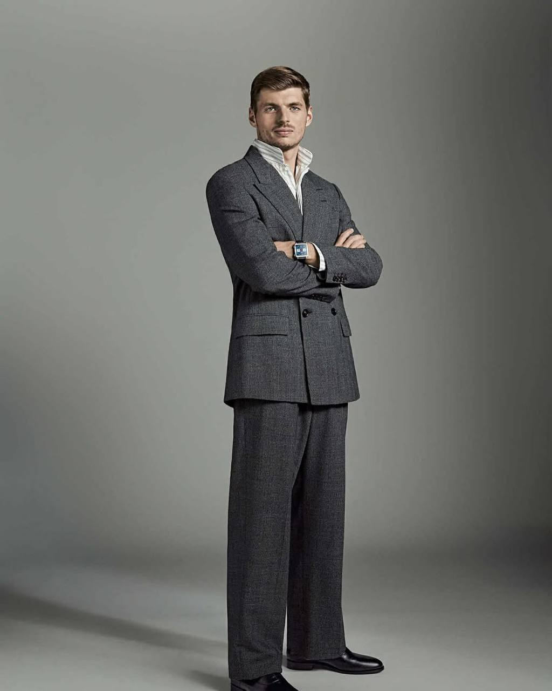
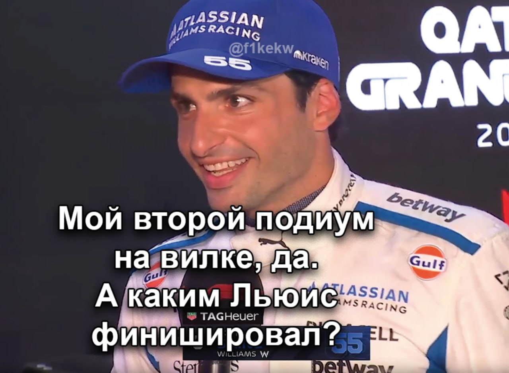
Простите...
Qatar 2025
В каком же напряжении приходилось считать круги из-за ограничения по шинам!! Я просто в напряжении просидела полтора часа!! Даже боялась загадывать, что есть какой-то шанс на победу, но Макс решил организовать мне опдарок на день рождения, спасибо!!
Не хочу загадывать, предполагать, оценивать шансы, я буквально заглушаю эту дурацкую надежду весь сезон. Слишком нереалистичными всегда выглядят шансы, но в любом случае. Какое же удовольствие наблюдать за тем, как не смотря ни на что мы все еще в гонке. Да, шансов мало, да, отставание есть, но опять все оставлено на Абу-Даби. All roads lead to Abu-Dhabi.
Если бы пила, то выпила бы 7ого числа в любом случае. Ну и в любом случае спасибо за этот сезон, получилось жарко. Хотя что-то рановато я хвалю и благодарю
P.S. Ну какой же всегда стресс с этими спонтанными машинами безопасностями и решениями о пит-стопе. Ханна, ну порешала, ну красавица!!
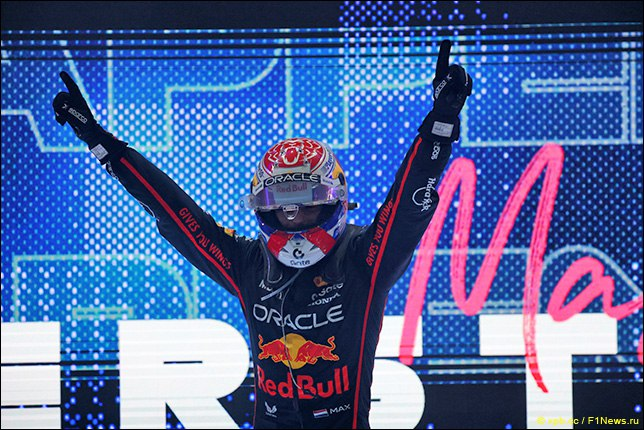
Las Vegas 2025
Сначала мне понравилась гонка! А после мне понравился дабл днф маков. Ради такого можно и в 6 утра проснуться - отличное начало дня!!
Серьезно, у меня не было высоких ожиданий от Лас Вегаса, кто бы мог подумать, что Норрис просто подарит Максу первое место, чудеса какие-то
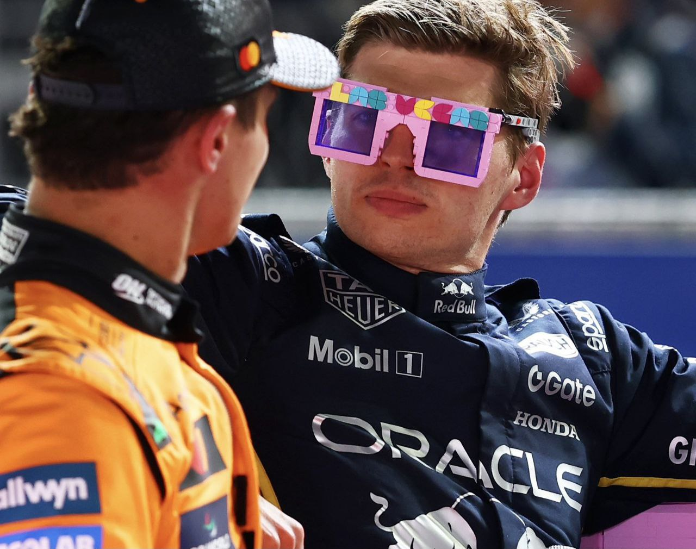
Mexico 2025
Я на стадии принятия, постоянно забываю, что мы лохи позорные
Austin 2025
Ой, как же хорошо жить сразу, когда Макс побеждает, чувство дома 🥰
Все еще не собираюсь считать эти ваши шансы в личном зачете!!!
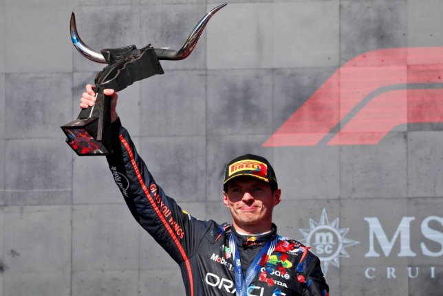
Singapore 2025
Ну не нравится мне эта трасса, ну что я могу сделать с этим!! Гонка, честно говоря, скучновата 😪
Baku 2025
Я не хочу считать очки и переживать за личный зачет, мне было вполне спокойно наслаждаться и простым сезоном, но... ТУ ТУ ТУ ТУ!!! МАКС ФЕРСТАППЕН!!
все, спокойно, не дышим на личный зачет и дальше...
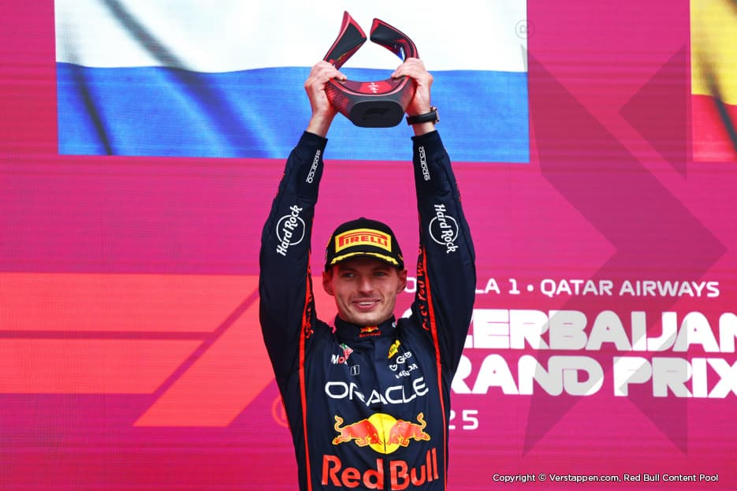
Квала в Баку
Как хорошо, что мне пришлось смотреть квалу в записи... Это вообще что такое было? 🚩 🚩 🚩
P.S. Максу спасибо, успокоил жесть. До последнего казалось, что не успеет проехать хотя бы один боевой круг с таким количеством флагов...
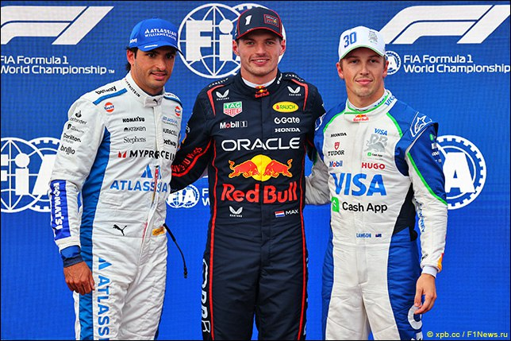
Monza 2025
Макс почувствовал, как много сложного сейчас у меня в жизни и решил помочь, так мило с его стороны! Серьезно, поул и победа Макса сработали как прикосновение кошачьей лапки, стало так спокойно и хорошо

Zandvoort 2025
Это просто какие-то американские гонки. Я раз пять за гонку сидела просто с открытым ртом от шока 😮
Столько неожиданных поворотов... Все еще раз поздравим Хаджара с подиумом!!!
Всем советую посмотреть, это гонка — маленькая жизнь
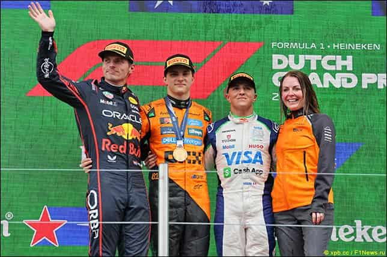
Я люблю его!!!
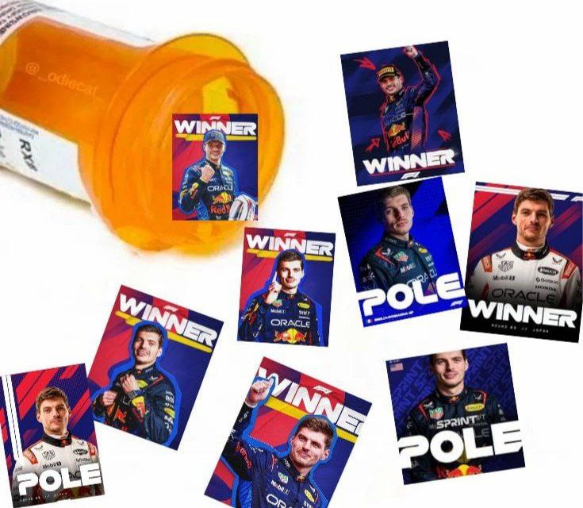
Верните мне мой 2023. Единственное лекарство, которое поможет мне сейчас
Кто?
Если в Кадиллак будут Перес и Боттас, то кто из них будет вторым пилотом? 🤔
What Makes Max Verstappen One Of The F1 Greats? | Behind The Charge
Ура, летний перерыв
Ура, летний перерыв/Ура, летний перерыв/Ура, летний перерыв/Ура, летний перерыв/Ура, летний перерыв/Ура, летний перерыв
Макс Ферстаппен: Ничего не работает
"Действующий чемпион мира заявил, что у его машины серьёзные проблемы с нехваткой скорости, и команда пока не знает причину"
Я не плачу, это просто дождь
Источник: f1news.ru.
Spa 2025
1. Гонку не должны были откладывать так сильно, давайте помнить о существовании дождевых шин
2. Я говорю это не от лица фаната Макса, у которого были дождевые настройки, честно
3. Было скучно
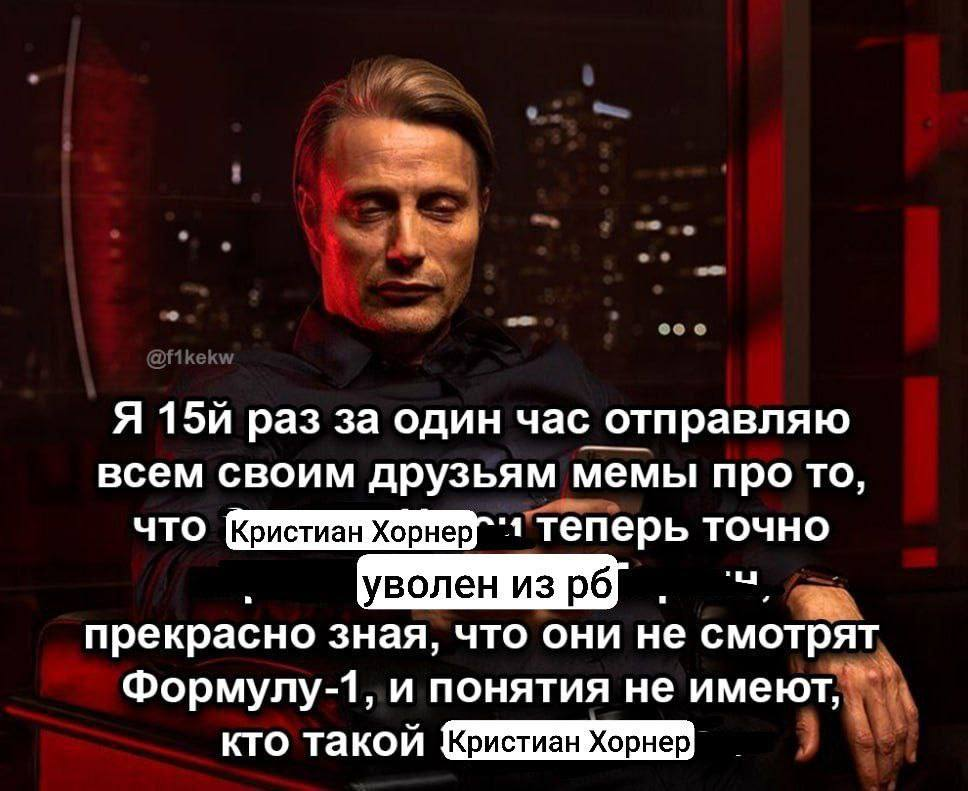
Да, я
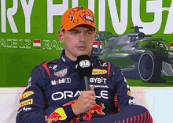
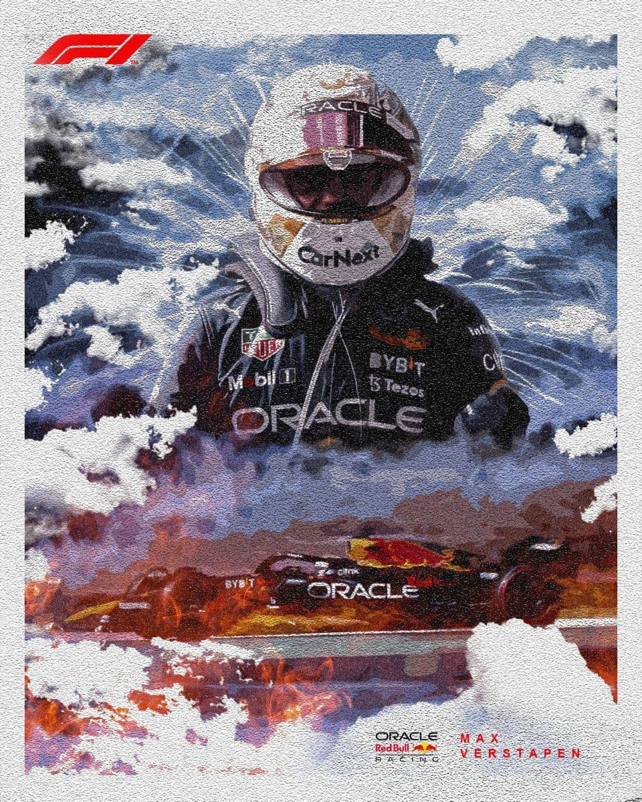
Guess my favorite driver
Когда мне грустно или плохо, я обязательно пересматриваю That night in Abu Dhabi. Я волнуюсь каждый раз, как в первый, зато в конце настроение отличное!!
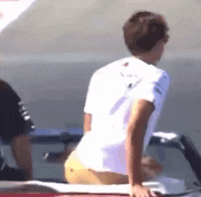
“If my mom had balls she would be my dad”
— Max Verstappen
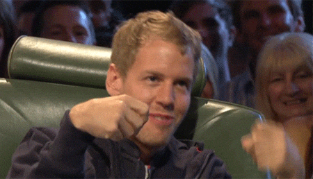
Мой первый сезон
Начала смотреть только в 2021 году, с тех пор не пропускаю ни одной гонки
“The only place that matters is first"
— Max Verstappen
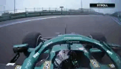

“The car was f*cked. I couldn't even say the F word? It's not even that bad... What are we, 5-year-olds, 6-year-olds?"
— Max Verstappen
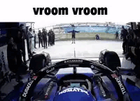